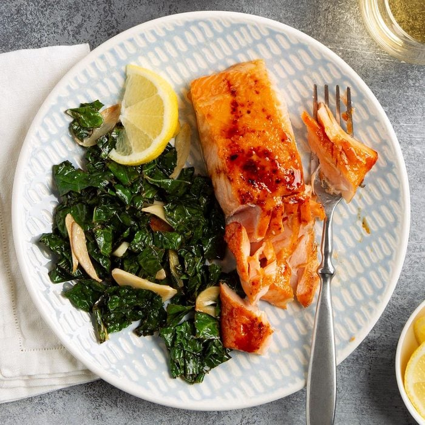

Honey-Mustard Glazed Salmon
Ingredients
- Salmon fillets
- 2/3 cup of brown sugar
- 2 tablespoons of dijon mustard
- 2 tablespoons of honey
- 1/2 teaspoon of salt
Directions
- Step 1: Put the fillets on a greased baking sheet skin side down.
- Step 2: Mix the brown sugar, mustard, honey, and salt in a small bowl, spoon it over the salmon.
- Step 3: Broil the salmon 3-4 inches from the heat until it easily flakes with a fork, which takes about 8-12 minutes.
Contact Me
You can contact me via email at sean.christenson@umconnect.umt.edu.

For more information about this dish, you can visit the original recipe.